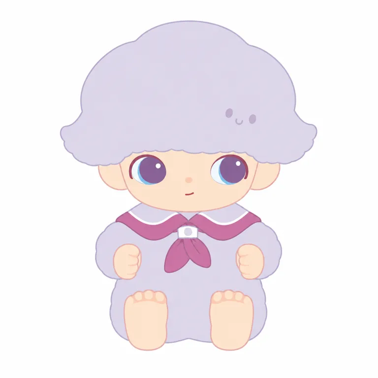

伙伴直接进入角色轮廓，让故事关系成为可变化的外形结构。
作者描述男孩与云共生；不同系列云形可变，脸部持续提供识别。[A06] [A07] [S01] [S02] [S03]
边界：不是所有变形都能保留身份；需要单款测试，不证明云形导致销售。
STANDARD STUDY / 2026.10.20
一朵云，
陪着胆小的我去冒险。
把陪伴画进轮廓，让梦境长成系列。
从创作原点到商品，再回到可核验的视觉关系。

真正可借鉴的是“伙伴关系如何进入结构”；
可变的云形，也需要稳定的面部关系来承接。
怕生的男孩进入梦境，云妈妈把云宝宝放在他头顶。两种生命共同经历陌生世界。
这是作者在直接采访中说明的创作设定；男孩的原点来自朋友家怕生、却会为感兴趣的事迈出一步的孩子。最早是平面，后来才转成立体作品。[A06]
害怕也没关系，
有伙伴就能向前一点。
研究归纳，非官方口号。不能把作者的创作意图直接当成全体购买者感受。
没有把2019首个合作盲盒，误写成角色的第一次出现。
| 时间 | 可核事件 | 来源 |
|---|---|---|
| 2016／2017 | 创作起点存在口径差：2018早期媒体记2016；2019与2024品牌回溯记2017。 | [A03] [A04] [A05] |
| 2017 | 公司团队采访称展会发现并签下，开始孵化；不是取得了当年合同。 | [A07] |
| 2017-05／2018-07 | 早期媒体记2017年5月作品发售；2018年已有DIMOO WORLD展览。 | [A05] |
| 2019-07-27 | 《迷途动物》在北京首发：首个与泡泡玛特合作的盲盒系列。 | [A04] |
| 2020-12-01 | 招股书列为收购自有IP；作者表的关系年限为1年。精确转让日期未知。 | [A08] |
| 2024-04 | 澳大利亚主题快闪、作者签售与袋鼠限定产品。 | [A03] |
| 2025—2026 | 系列、联名与载体继续扩展；2026公告提及DIMOO WORLD CLOUDLAKE乐园区域。 | [A09] [A10] |
作者描述男孩与云共生；不同系列云形可变，脸部持续提供识别。[A06] [A07] [S01] [S02] [S03]
边界：不是所有变形都能保留身份；需要单款测试，不证明云形导致销售。
本轮跨系列可见大眼、短宽脸和云形顶部组合，服装、眼色与姿态明显变化。[S01] [S02] [S03]
边界：色彩与姿势不是全IP固定标准；本轮只有6图，非全量图鉴。
作者访谈描述合作后的分工变化，公司团队访谈谈两年储备与开发。[A06] [A07] [A09] [A10]
边界：渠道和供给也是解释变量，不能把集团收入增长全归因于造型。
| 行为层级 | 本轮证据 | 不能推出 |
|---|---|---|
| 付费规模 | 年度／中期公告按IP收入 | 单款畅销率、复购动机 |
| 活动参与 | 澳洲签售与跨州参加的品牌案例 [A03] | 总体粉丝比例或自然流量贡献 |
| 社群表达 | 本轮未取得小红书笔记与连续评论样本 | 不编用户画像、口头禅或点赞中位数 |
作者访谈谈及合作后的产品与供应链分工；公司采访谈到设计储备、开发与产能。今天复制一个柔和形象，并不会自动获得同等渠道、团队和发行能力。[A06] [A07]
覆盖闭眼头像、装备型手办、日常主题、倒置姿态与毛绒载体；这不是全系列图鉴。


逐图观察均基于实际打开的图片。图片版权归原权利人，报告引用原站地址；未把原图副本打包公开。商品图不是官方二维母版，也不是已核三视图。
| 五条轴 | 本轮观察 | 变量与限制 |
|---|---|---|
| 原型 | 幼态男孩与云伙伴共同出现 | 不是普通男孩外加一顶可任意换掉的帽子 |
| 轮廓 | 大头小身，云形扩展头顶体积 | 服装、底座与姿态使外轮廓变化 |
| 记忆点 | 头顶伙伴＋脸部关系形成组合 | 部分云脸可能被主题遮挡 |
| 五官 | 大眼、短宽脸、小鼻短嘴常见 | V01闭眼；黄、蓝、棕、紫眼皆可见 |
| 情绪 | 内向、好奇、探索的故事基底 | 单帧表情不能代替完整性格范围 |
云与男孩的共生；头部体块大于身体；脸部是主题变化中的识别中心。此为样本归纳，不是官方标准手册。
发色、眼色、装备、服装、姿势、场景和载体都可变化。新设计可借“关系进入结构”的方法，不能搬用整套云发与脸部组合。
剪影、缩小、换皮和去道具辨识：本轮仅作观察，未开展受试者盲测；没有伪造识别率。
以上仅为 V06 的屏幕近似。其他样本中云发为绿、粉、灰紫、灰绿或粉白，眼睛也会改变。比固定色号更值得研究的是浅脸、深眼部与主题色块之间的层级。
| 角色 | 系列／载体 | 官方规格与缺口 | 价格口径 | 日期与证据 |
|---|---|---|---|---|
| 2019 首合作系列 | 迷途动物 | 盲盒；本轮最早商品规格未知 | 价格未知 | 2019-07-27北京首发 [A04] |
| 主题手办 | Weaving Wonders | 7–11cm；PVC/ABS | 本轮SKU价未取得 | 10月4日，页面未写年份 [S01] |
| 日常梦境 | The Missing Day | 7–10cm；PVC/ABS | 本轮SKU价未取得 | 2025-09-18，美国官网 [S02] |
| 随身毛绒 | Journal of New Life | 不含挂绳12.5cm；聚酯/PVC/ABS；填充聚酯/ABS/PU | 美国目录索引 $26.99，待实时复核 | 2025-11-06，美国官网 [S03] [S04] |
| 其他载体线索 | Dating小毛绒／Weaving Wonders陶瓷杯 | 规格本轮未展开，不从标题估算 | 相关商品栏分别 $46.99／$29.99 | 2026-10-20观察；美国站 [S01] |
官方款式列表可见 Weaving Wonders 12个非 Secret 条目＋2个 Secret 条目；The Missing Day 12＋1；Journal of New Life 6＋1。这里只数页面条目，不能据此推出整盒构成、隐藏概率或购买保证。
手办适合陈列，挂件适合携带，日用品进入使用场景，这是产品功能层面的解释。哪一种带来更高复购，本轮没有 IP 专属数据。
| 期间 | 人民币千元 | 折合人民币 | 占集团收入 | 来源 |
|---|---|---|---|---|
| 2024全年 | 909,561 | 9.10亿元 | 7.0% | [A09] |
| 2025全年 | 2,776,695 | 27.77亿元 | 7.5% | [A09] |
| 2025上半年 | 1,105,135 | 11.05亿元 | 8.0% | [A10] |
| 2026上半年（未经审核） | 1,619,217 | 16.19亿元 | 9.4% | [A10] |
2025全年 / 2024全年
据同表原值计算
2026上半年 / 2025上半年
据同表原值计算
这两份来源是年度与中期业绩公告，口径为集团按 IP 确认收入。它不是全球零售 GMV、利润、授权金或作者收入；不以半年乘二预测全年，也不把集团会员复购率套给 DIMOO。
2021公司团队采访记录部分系列断货。团队谈到产能、预估与复杂工艺的影响；这是公司解释，不能当作蓄意饥饿营销的证明。[A07]
2022一位买家公开投诉樱花果冻兔瑕疵与回电延迟；次日商家回应后，买家确认完成。个案未独立检测，不能推断全体质量问题率。[A11]
未找到可核的 DIMOO 专项召回、失败系列销量或代表性退坑调查。没找到，不等于从未失败；可爱造型、IP叙事、渠道规模、联名和供给变化都可能共同解释结果。
云形、头脸、眼睛、色块与坐姿已接近；云边、脚趾与下巴仍有简化，少量渐变残留。这里的“接近”是定性研究判断，未做像素相似度，也不代表用户已批准。
依据作品的研究重建，并非艺术家的原始提示词，也不暗示原作由 AI 制作。
将输入参考图中的唯一坐姿角色转换成忠实的二维平面角色设定图，用于研究比对。参考图是身份、比例、轮廓、五官位置、各色块范围和动作的唯一依据。完整保留：宽扁圆拱的淡灰薰衣草紫云发、左右低侧外翘的小尖、右前方细小低对比云脸；短宽桃肤脸、外露小耳、大而近圆的紫蓝眼睛与窄淡蓝眼白、细暗红上眼线、每眼一个上方小白亮点，极小圆鼻与短红嘴；淡紫坐姿身体、梅子粉外边的水手领与双垂领结、胸前白扣、双手在两侧向前、双脚足底朝前。严格照着参考图的头发高度、头脸宽度、眼距、颊部留白、肩宽和脚的位置，不放大头发，不把云脸画成贴花，不变成通用大眼婴儿，不添加眉毛或睫毛。仅改变表现媒介：去掉照片背景、纤维纹理、立体高光、投影与景深，将体积简化为干净均匀的平面色块与细浅边线；色块保持参考的灰浅紫、桃肤、深紫蓝眼睛、梅子粉领结关系。白底，单角色正面全身居中，四周留白，不写文字或标志。不创造新服装、道具、姿态、侧背面或三维产品。 本轮特别校准：云脸必须是两个非常小的浅紫椭圆点加一个很小的 U 形弯嘴，两个眼睛在上，嘴在两眼中间偏下；不要三条并排月牙，不要贴花底色。男孩下巴略收短，脸仍保持参考中的圆润短宽比例，嘴在中心偏画面右一点点，极细红色短线末端略上扬，不能画大笑。云发面积与身体比例严格按输入原图，不用上一轮生成图作为依据。降低云发和皮肤阴影，主体用平涂色块，无渐变。下载原文
从具体的不安与陪伴关系找表达，不照搬梦中男孩和云伙伴故事。
研究如何把关系嵌入结构；新角色另设原型、轮廓和脸部关系，避免专属组合。
把陈列、携带、日用作为不同任务分别验证；当前仅指定SKU参考辅助平面接近，未进入原创或实物延展。
事实、官方／作者自述、研究推断与待验证假说分开记录。截止 2026-10-20。
POP MART Philippines · 发布：未标日期 · 正文相关段落已读
当前官网履历不能倒推出工作室创办年份、作者出生年月或法律合同。
联合早报；记者陈宇昕 · 发布：2023-10-01 · 正文相关段落已读
只用于中文姓名及中国设计师身份；其他被采访的马来西亚设计师故事不可错归DIMOO。
POP MART via PR Newswire · 发布：2024-05-07 · 正文相关段落已读
2017是品牌回溯创作口径，与2018早期媒体的2016创作资料不同。粉丝行为是品牌挑选案例，无抽样框；集团海外收入及20,000人展会数据不能归DIMOO。
界面商讯（商业信息转载） · 发布：2019-08-02 · 正文相关段落已读
页面明确商讯转载，不伪装独立现场调查；首个合作盲盒系列不等于角色最早作品或签约日。
inTOYS玩具里（搜狐号） · 发布：2018-07-13 · 正文相关段落已读
早期专业媒体、非艺术家原始作品档案；其2016口径与品牌2017口径冲突，不能无条件裁定生日。它证明2019合作盲盒之前已有作品与展览，不宜混成泡泡玛特首系列。
界面新闻；记者娄晓晶 · 发布：2020-05-28 · 正文相关段落已读
角色故事和创作意图为作者直接自述；不能把“治愈”当临床效果，也不能从作者对社群归属的看法推出所有消费者动机。
三声/任彤瑶，发表于澎湃号 · 发布：2021-05-04 · 正文相关段落已读
2017签下是采访报道用语，不是合同原件；与招股书截至2020关系1年有口径差，不将孵化/转让/上市强行合并。断货解释是公司归因，不证明蓄意饥饿营销。
POP MART / HKEX · 发布：2020-12-01 · 原PDF直接下载；相关页正文已读
web解析失败，但直接从相同港交所URL下载10.2MB PDF并用pdftotext读取相关页；PDF物理页217/239。属2020披露，不证明当前每项合同条款、买断金额、精确交易日或2017报道错误。不要把Molly的2018/2019转让日期套到Dimoo。
POP MART / HKEX · 发布：2026-03-25 · PDF物理33页收入表及经营讨论相关段落已读
这是年度业绩公告而非整本年报；按IP收入表，非全球GMV、利润、作者分成或授权金。Artist IP分类本身不能替代产权合同。
POP MART / HKEX · 发布：2026-08-20 · PDF物理30页收入表及相关经营讨论已读
半年未经审核业绩公告。不能拿半年直接对全年算增长，也不乘2当全年预测。集团内地会员复购率51.6%不是DIMOO专属复购率。
黑猫投诉：用户公开原帖及商家回应 · 发布：2022-09-12 · 正文相关段落已读
单个自选投诉且已完成，未独立检测瑕疵或核订单；不能写成未处理至今、普遍质量不佳、召回或质量问题发生率。匿名化概述，不转载整段。
POP MART US · 发布：未标日期 · 相关正文与图片已读
商品规格、两张400px款式图；只写10月4日，年份未知。
POP MART US · 发布：未标日期 · 相关正文与图片已读
美国站2025-09-18发售；800px场景样本；不要把SEO标题里的其他IP词当身份。
POP MART US · 发布：未标日期 · 相关正文与图片已读
美国站2025-11-06发售；本轮锁定Innocence正面官方图。
POP MART US · 发布：未标日期 · snippet_only
本轮搜索索引显示价格，直开失败；仅作标价线索，不保证实时库存或成交价。